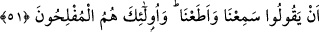

zâlimlerin tâ kendileri oldukları için yüz çeviriyorlardı. Haklarında doğrulukla hüküm
vereceğini bildikleri için Hz. Peygamber (s.a.)’in huzûrunda muhâkemeden
kaçınıyorlardı. İlk iki ihtimalde reddedilen husus, bu ihtimallerin sadece yüz
çevirmelerine kaynaklık etme vasıflarıdır. Yoksa gerçekte bu özellikler o kişilerde
mevcuddur. Üçüncüsünde, böyle bir şey bizzat gerçekleşmemekle beraber vasıf
reddediliyor. Dördüncüsünde ise hem aslen hem de vasfen yüz çevirmenin temel sebebi
ortaya konuyor.
51. Aralarında hüküm vermesi için Allah’a ve Rasûlü’ne dâvet edildiklerinde,
mü’minlerin sözü ancak “İşittik ve itâat ettik” demeleridir. İşte asıl bunlar
kurtuluşa erenlerdir.
İster kendilerinden veya başkalarından olsun hasımları ile kendi “Aralarında”
Rasûl’ün “hüküm vermesi için Allah’a ve Rasûlü’ne dâvet edildiklerinde,
mü’minlerin sözü ancak” dâveti“İşittik ve” icâbet ve kabûl ile “itâat ettik”
demeleridir.”
“
” isteyerek emre uymaktır. Bu hem Allah için, hem de başkaları için geçerlidir.
Nitekim Fethu’r-Rahmân’da böyle geçmektedir.
Aramızda neye hükmedersen geçerli bir hükümdür
“İşte asıl bunlar” zikredilen bu güzel sıfatları taşıyanlar “kurtuluşa erenlerdir” yâni
arzu duyulan her şeyi elde edip sakınılması gereken her türlü kötülükten kurtulanlardır.
el-Müfredât’ta “
” zafer ve arzulanan şeye kavuşmak demektir” der.